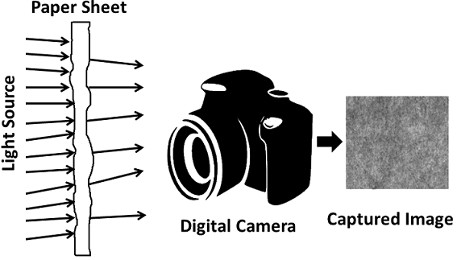
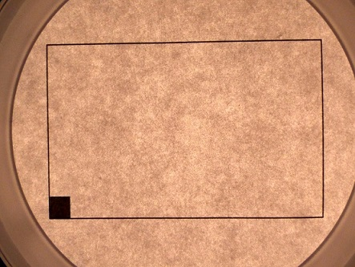
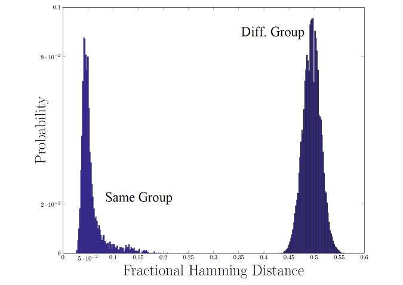
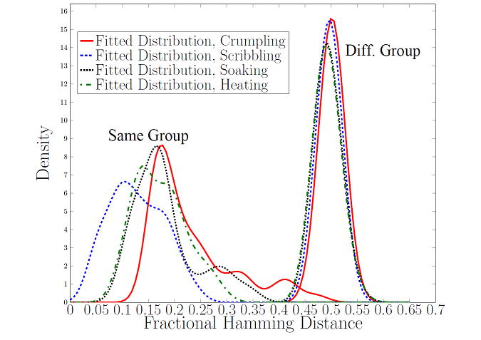
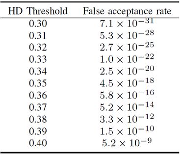
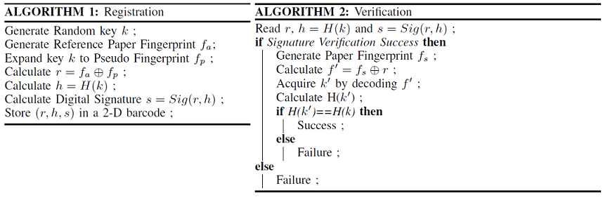
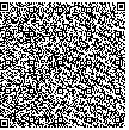

Abstract
In this paper, we propose a novel paper fingerprinting technique based on analyzing the translucent patterns revealed when a light source shines through the paper. These patterns represent the inherent texture of paper, formed by the random interleaving of wooden particles during the manufacturing process. We show these patterns can be easily captured by a commodity camera and condensed into to a compact 2048-bit fingerprint code. Prominent works in this area (Nature 2005, IEEE S&P 2009, CCS 2011) have all focused on fingerprinting paper based on the paper "surface". We are motivated by the observation that capturing the surface alone misses important distinctive features such as the non-even thickness, the random distribution of impurities, and different materials in the paper with varying opacities. Through experiments, we demonstrate that the embedded paper texture provides a more reliable source for fingerprinting than features on the surface. Based on the collected datasets, we achieve 0% false rejection and 0% false acceptance rates. We further report that our extracted fingerprints contain 807 degrees-of-freedom (DoF), which is much higher than the 249 DoF with iris codes (that have the same size of 2048 bits). The high amount of DoF for texture-based fingerprints makes our method extremely scalable for recognition among very large databases; it also allows secure usage of the extracted fingerprint in privacy-preserving authentication schemes based on error correction techniques.
Paper Fingerprinting Overview
So far, prominent works in this area have primarily focused on the imperfections of the paper surface. In contrast, our work is inspired by the observation that the wooden particles constituting the building blocks of a paper sheet scatter over the paper quite irregularly. We hypothesize that this irregular placement of wooden particles provides a unique pattern, which can be extracted and used as a paper fingerprint. We call the unique pattern caused by the random interleaving of wooden particles the texture of paper.
Unlike previous works that measure the paper surface characteristics, we propose to fingerprint a paper sheet based on measuring the paper texture patterns. We capture the texture by putting a light source on one side of the paper and using a commodity camera to take a photograph on the other side. This is intuitively based on the common observation that putting a paper sheet under light will immediately reveal rich irregular textural patterns visible even to the naked eye. 
Our Procedure
In order to obtain consistent fingerprints, we require that a relatively small but fixed part of a sheet of paper is used as a source of fingerprint extraction. We chose to print a rectangular box (37mm×57mm) on the sheet to indicate this area. In addition, we printed a small filled square (5mm×5mm) at the bottom left of the box (see Figure 10). Using this small square, in our preparation phase our method can check that the rotation has been carried out correctly (distinguishing cases when the paper is placed upside-down or flipped). This is how this box is captured by the camera: 
We use a Gabor impulse response of size 100×100 and the output of Gabor filter in our experiments. The final paper fingerprint is a string of the size 2048 bits.
Our Equipments
Panasonic DMC-FZ72 camera with a resolution of 16.1 Mega-pixels for two main reasons:
- The ability to capture a photo in macro mode from a short distance (minimum 1 cm focus)
- The ability to mount a macro flash ring over the lens
Ordinary Macro Flash Ring: to maintain a constant distance between the lens and the paper surface.
Light Source: was from either an overhead projector or a commodity light box (tracing pad). This light is intense and adjustable. Furthermore, it has a flat surface with constant distance from the light source.
Our Dataset
Our main dataset on which we report our evaluations is a set of 1000 samples collected by taking 10 photos of each of 100 different paper sheets to provide a good diversity.We use typical office paper sheets of size A4 (210mm × 297mm) with grammage of 80 g/m2 . All the sheets were from the same pack with the same brand. In all of the photos, camera settings including aperture and exposure time were kept constant.
Fractional Hamming Distance distribution for all the comparisons of fingerprints in our Dataset is as below:
Robustness
we evaluate our method’s robustness in non-ideal circumstances. First, we consider the robustness of our method against misalignment, i.e., in cases where the rectangular box is not aligned to the photo frame. Then, we consider the robustness of our method against paper being roughly handled in the following cases: the paper sheet is crumpled, some scribbling is done in the rectangular box, the sheet is soaked in water and dried afterwards, and the sheet is ironed after soaking and partially burnt.
Fractional Hamming Distance distribution for the robustness evaluations is as below:
Authentication
There are two approaches for authentication:
- Online Approach: either a centralized database or a distributed ledger (blockchain) can be dedicated to store registered fingerprints and fresh fingerprints can be verified against such registered fingerprints during the authentication procedure. Teh The chances of a collision in the database is very low due to the high entropy of our fingerprints. Theoretical false acceptance rates for various Hamming distance thresholds are as follows: 
- Offline Approach: uses an established technique in biometrics, called biometric encryption , to realize fingerprint encryption. We store the encrypted fingerprint as a QR code on the same sheet of paper. This encrypted paper fingerprint can be used to authenticate the paper sheet offline using the algorithms below.  An example QR code containing the encrypted paper fingerprint of one of our sheets is shown below. 
Media Coverage
There has been various coverage by media for this project:
- English: The Economist, Wall Street Journal, Newcastle University press release, Chronicle Live, Digital Trends, Express, DNA India, ITV News, New Atlas, Phys.org, Science Daily, Zee News India, Science Daily
- Other Languages: Mehr News, ANA News, Shahr Araa, Click